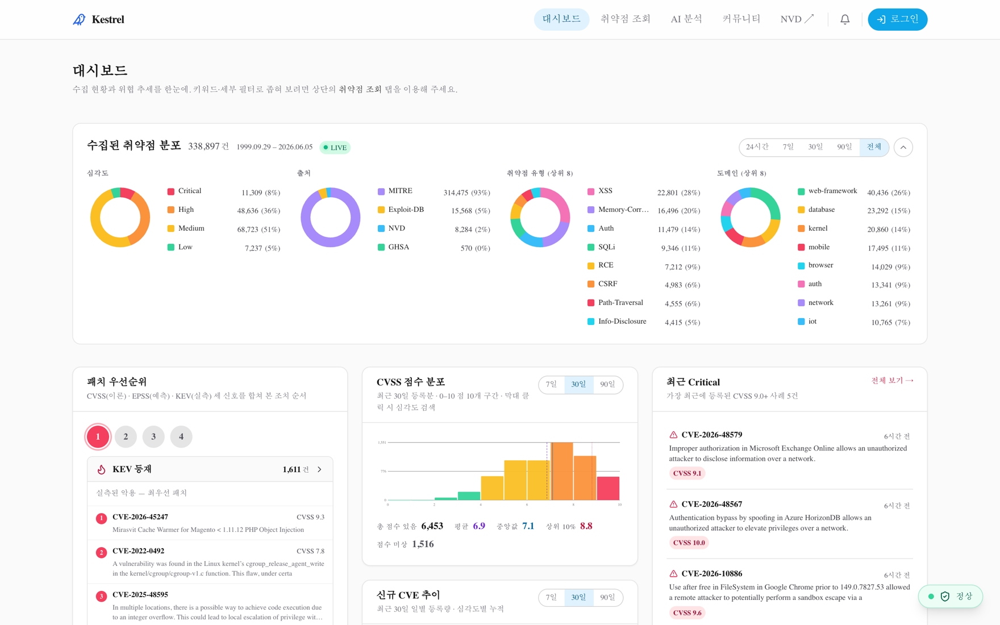
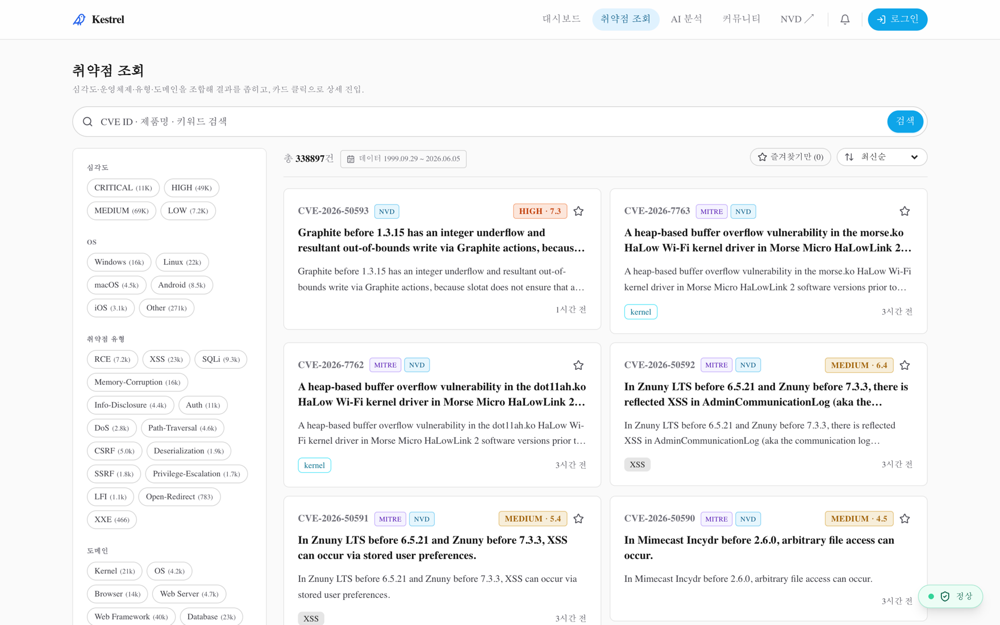
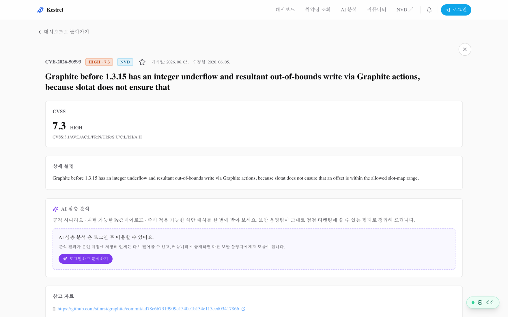
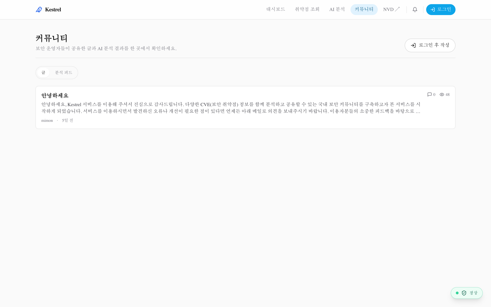
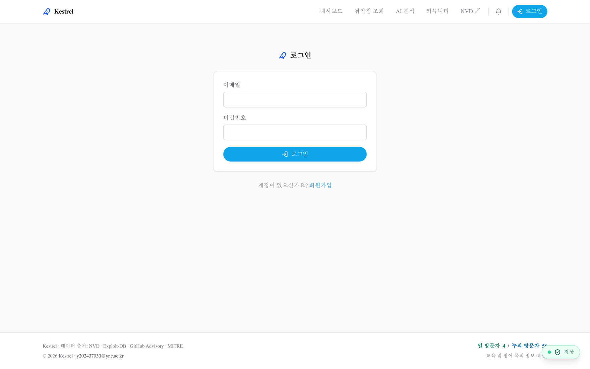

매년 수만 건의 CVE 가 쏟아지지만 실제로 악용되는 비율은 일부입니다. Kestrel 은 흩어진 취약점 피드를 한곳에 모으고, 이론적 심각도(CVSS) · 악용 확률(EPSS) · 실제 악용 사실(KEV) 세 신호를 함께 보여 주어 보안 담당자가 우선순위를 빠르게 판단하도록 돕습니다.
NVD·MITRE·Exploit-DB·GitHub Advisory 통합 수집 (현재 약 338,897건).
CVSS·EPSS·KEV 신호를 한 화면에서 결합해 "오늘 볼 것"을 추림.
Claude 기반으로 CVE 별 공격·방어 관점 분석을 생성.
https://15.165.138.227.nip.io)를 직접 캡처한 실제 화면입니다. (페이지당 한 화면)




| 영역 | 현재 제공 기능 |
|---|---|
| 데이터 수집 | NVD · MITRE cvelistV5 · Exploit-DB · GitHub Advisory 자동 수집, 정규화·중복 제거, 수집 이력(ingestion_logs) 기록 |
| 위협 우선순위 | CISA KEV 등재 표시, FIRST EPSS 점수/백분위, CVSS 점수·심각도 — 3축 결합 정렬 |
| 검색·조회 | Meilisearch 전문 검색(오타 허용) + PostgreSQL 전문검색 폴백, 심각도·OS·유형·출처 필터 |
| 대시보드 | 수집 규모, 심각도/출처/유형/도메인 분포, 패치 우선순위, CVSS 분포, 신규/최근 Critical |
| AI 분석 | Claude(CLI OAuth / API 키) 기반 CVE별 공격·방어 분석 생성 및 분석 기록 저장 |
| 협업 | 북마크, 대응 티켓, 커뮤니티 게시글·댓글 |
| 인증·권한 | 회원가입/로그인(bcrypt+JWT), 역할 기반 접근(RBAC), 접속 로그 |
| 관리자 | 사용자/역할 관리, 감사·접속·활동 로그 조회, 수집·우선순위 신호 수동 갱신 |
| 실습 샌드박스 | 격리 Docker 네트워크 기반 취약 랩 재현(리소스 제약 환경에서 제한적 운영) |
t4g.small(2GB RAM) 인스턴스의 자원 제약상 대규모 동시 재현보다는 소규모 실습·검증 용도로 운영합니다.| 항목 | 현재 구성 |
|---|---|
| 컴퓨트 | EC2 t4g.small (ARM Graviton, 2 vCPU / 2 GB RAM) 1대 + 2 GB 스왑 |
| 리전 | ap-northeast-2 (서울) |
| 스토리지 | EBS 30 GB gp3 데이터 볼륨(/data) — Docker data-root 분리 |
| 네트워크 | 전용 VPC·퍼블릭 서브넷·IGW, Elastic IP + <EIP>.nip.io 도메인 |
| TLS | Caddy 리버스 프록시 + Let's Encrypt 자동 인증서 |
| 접속·보안 | SSH 차단, AWS SSM Session Manager 로만 운영 접속, 보안그룹 80/443 공개 |
| 백업 | AWS Backup(전용 vault·plan)으로 데이터 볼륨 일일 스냅샷 |
| 프로비저닝 | Terraform(infra/ec2) + user_data 부트스트랩 — git clone 후 docker compose up |
| 레이어 | 기술 | 역할 |
|---|---|---|
| 프런트엔드 | Next.js 15 · React 19 · TypeScript · Tailwind · TanStack Query · Zustand | 대시보드·조회·상세·커뮤니티 UI |
| 백엔드 | FastAPI · Python 3.12 · SQLAlchemy 2.0(async) · Pydantic v2 · Alembic | REST API, 수집·분석 처리, 마이그레이션 |
| 데이터 | PostgreSQL 16 (JSONB·TSVECTOR) · Redis 7 | 본문·신호 저장, 캐시·레이트리밋 |
| 검색 | Meilisearch v1.10 | 오타 허용 전문 검색 |
| 수집 스케줄 | APScheduler | 소스별 시차 주기 수집 + KEV/EPSS 갱신 |
| AI | Anthropic Claude (CLI OAuth / API 키) | CVE별 공격·방어 분석 생성 |
| 인증 | bcrypt + JWT · 역할 기반(RBAC) | 회원·관리자 권한 분리 |
| 배포·운영 | Docker Compose · Caddy · Terraform · AWS(EC2·EBS·Backup·SSM) | 단일 호스트 컨테이너 운영 |
| 관측 | structlog (+ OpenTelemetry·Sentry 옵션) | 구조화 로그·에러 추적 |
vulnerabilities 이며, 그 위에 분석·커뮤니티·운영 테이블이 붙습니다.-- 취약점 본문 + 우선순위 신호 (수집의 종착점) CREATE TABLE vulnerabilities ( id UUID PRIMARY KEY DEFAULT gen_random_uuid(), cve_id VARCHAR(32) UNIQUE NOT NULL, title VARCHAR(512) NOT NULL, description TEXT NOT NULL, cvss_score NUMERIC(3,1), -- 이론적 심각도 0.0–10.0 severity severity_enum, -- low|medium|high|critical epss_score DOUBLE PRECISION, -- 악용 확률 예측 (FIRST) kev_listed BOOLEAN NOT NULL DEFAULT false,-- 실제 악용 사실 (CISA KEV) source source_enum NOT NULL, -- nvd|mitre|exploit_db|github_advisory raw_data JSONB NOT NULL DEFAULT '{}', search_vector TSVECTOR, -- 전문검색 폴백 published_at TIMESTAMPTZ, created_at TIMESTAMPTZ NOT NULL DEFAULT now() ); CREATE INDEX ix_vuln_search ON vulnerabilities USING GIN(search_vector); CREATE INDEX ix_vuln_priority ON vulnerabilities (kev_listed, epss_score DESC, cvss_score DESC);
이 외 analysis_results(AI 분석), users·posts·comments(커뮤니티), bookmarks·tickets, login_logs·audit_logs(운영) 테이블이 함께 운영됩니다.
| 메서드 | 경로 | 설명 |
|---|---|---|
| GET | /api/v1/cves | 필터·정렬 목록(심각도·KEV·EPSS·소스) |
| GET | /api/v1/cves/{cve_id} | 본문 + 신호 + 영향 제품·참조 |
| GET | /api/v1/search | Meilisearch 전문 검색 |
| GET | /api/v1/dashboard · /stats | 대시보드 집계 통계 |
| POST | /api/v1/analysis | AI 분석 생성(인증 필요) |
| — | /api/v1/community/* · /bookmarks · /tickets | 커뮤니티·북마크·티켓 |
| POST | /api/v1/auth/{signup,login,logout} | 인증(bcrypt+JWT) · 접속 로그 |
| GET | /api/v1/admin/* | 사용자/역할·감사/접속 로그·수집 갱신 |
| GET | /api/v1/health | 헬스 체크 |
수집 CVE ≈ 338,897건 KEV 등재 1,611건 출처 MITRE 93% · Exploit-DB · NVD · GHSA 단일 EC2 가동 일일 백업 SSM 전용 접속
| 과제 | 내용 |
|---|---|
| 자원 확장 | 트래픽 증가 시 인스턴스 상향, 이후 DB/검색을 매니지드(RDS·OpenSearch 등)로 분리 |
| 도메인·인증 | kestrel.day 등 정식 도메인 적용 후 이메일 인증·OIDC 로그인 도입 |
| 샌드박스 강화 | 재현 전용 자원/노드 분리로 자동 재현 커버리지 확대 |
| 관측 강화 | OpenTelemetry·Sentry 상시화로 수집·AI 파이프라인 가시성 확보 |
Kestrel 은 33만 건 이상의 CVE 를 수집해 CVSS·EPSS·KEV 3축으로 우선순위를 제시하고, 검색·대시보드·AI 분석·커뮤니티를 제공하는 운영 중인 웹 서비스입니다. 화려한 다중 클라우드 아키텍처 대신 단일 EC2 + Docker Compose + IaC 라는 단순하고 재현 가능한 구성을 택해, 적은 운영 비용으로 안정적으로 가동하고 있습니다.
라이브 서비스에서 338K CVE·3축 우선순위·AI 분석을 실제 제공.
EC2 1대 + Compose, EBS 분리·일일 백업·SSM 보안 접속.
트래픽에 맞춰 자원 상향·매니지드 분리로 확장 여지 확보.